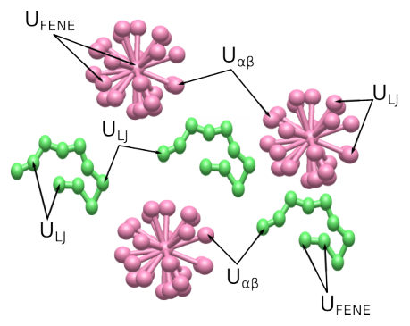
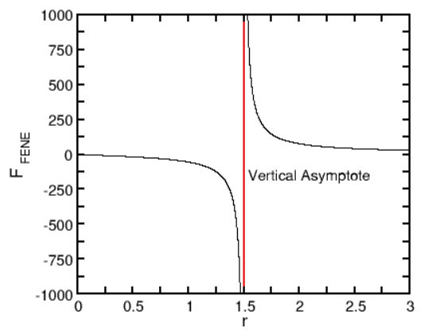
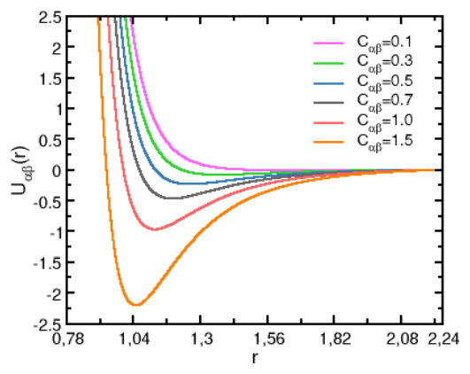
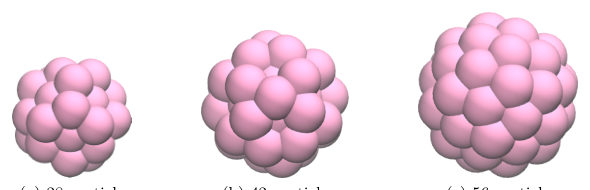

Authors: Julien Leuenberger, Kristiāns Čerņevičs, Oleg V. Yazyev
Type: theory · Category: other · PDF: https://arxiv.org/pdf/2607.08471v1
Analysis basis: full PDF text, analyzed in chunks
Topic relevance: Keldysh / 2PI / non-Gaussian methods 3/5 · driven-dissipative phase transition 2/5 · non-equilibrium universality 2/5 · Kondo & dissipative impurity 1/5 · analog quantum simulation 1/5 · methods for driven-dissipative 1/5 · non-equilibrium dynamics 1/5
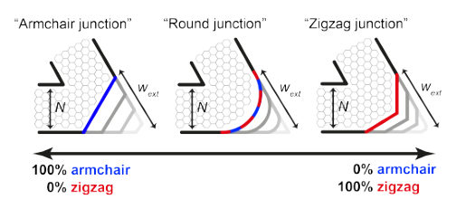
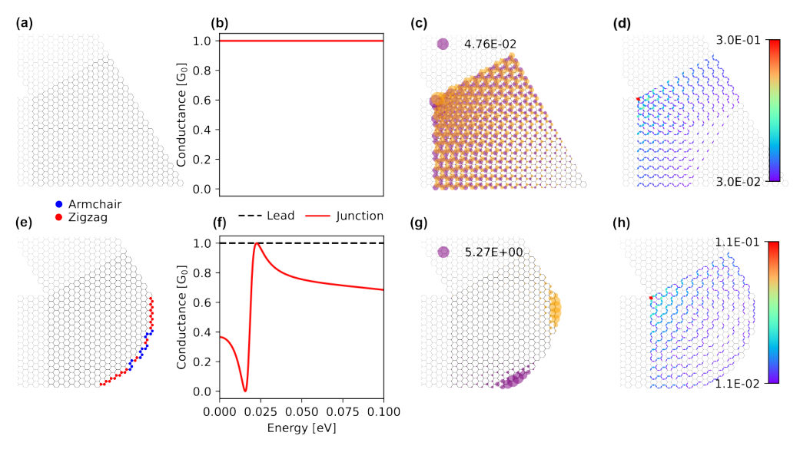
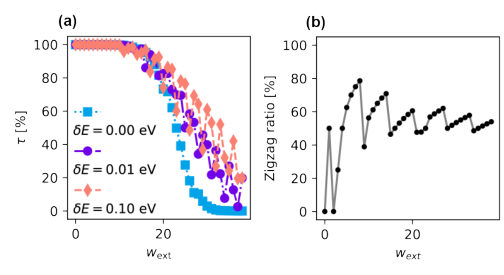
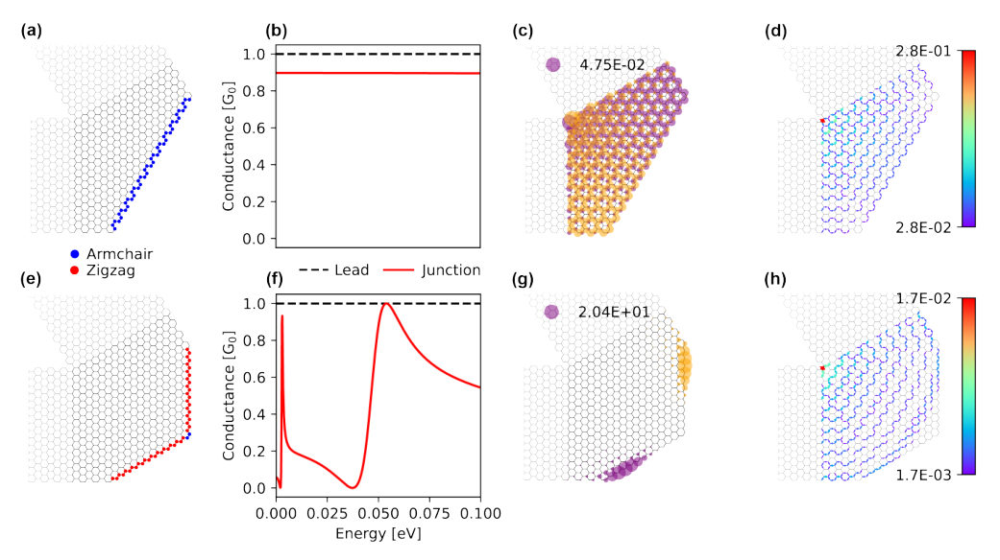
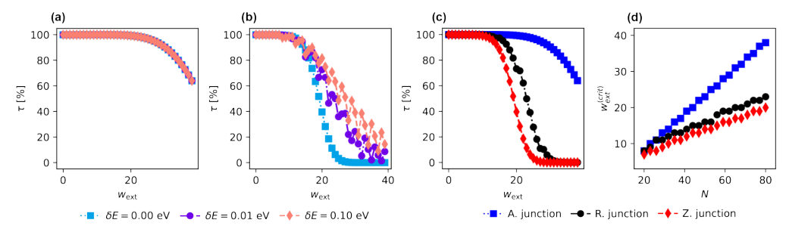
Summary. This work addresses the challenge of connecting Graphene Nanoribbons at angles by trimming their edges. Using tight-binding calculations, the authors show that conductance depends critically on the ratio of armchair to zigzag edge segments. They propose and validate a geometric mean model to predict junction conductance based on these edge ratios.
Why it may be interesting. While focused on solid-state electronics, the use of advanced quantum transport formalism (Green's functions) and developing analytical models (Ansatz) for complex boundary conditions is relevant to open quantum systems theory.
Main problem. The primary goal is designing optimal-sized junctions for Graphene Nanoribbons (GNRs) to allow angled connections while preserving favorable electronic transport properties.
Main result. Conductance in trimmed junctions is primarily dictated by the ratio of armchair to zigzag edges, and a geometric mean Ansatz provides a predictive model relating this conductance to pure junction types.
Method. The study employs quantum transport calculations using Green's function formalism within a tight-binding (TB) framework to determine electronic conductance.
Model / system. The system is Graphene Nanoribbons (GNRs), modeled via a 1NN hopping tight-binding Hamiltonian. The focus is on junctions formed by trimming the edges, which introduces varying ratios of armchair and zigzag edge segments.
Key observables. Conductance ($G$), Local Density of States (LDOS), probability density current, and the preserved conductance descriptor ($ au$).
Important parameters / regimes. The degree of trimming is controlled by a cutoff parameter ($ ext{w}_{ ext{ext}}$); transport is analyzed near the Fermi level ($E=0$).
Assumptions / limitations. The core predictive tool relies on an Ansatz using the geometric mean of conductances derived from pure armchair and zigzag junctions, which simplifies complex junction behavior.
Figures summary. Figures compare sharp vs. round junction properties (edge structure, conductance) for AGNRs; one figure shows preserved conductance vs. $ ext{w}_{ ext{ext}}$ for different edge types; another compares predicted vs. measured conductances using the geometric mean Ansatz.
Paper structure. The paper establishes the need for efficient GNR junctions, details the quantum transport methodology (Green's functions/TB), analyzes how trimming affects conductance based on edge ratios, and finally proposes and validates a predictive geometric mean model linking junction conductance to its pure components.
As Moore's law approaches its fundamental limits, the development of nanoelectronic devices using low-dimension materials has become a promising avenue for further miniaturization and performance improvements. Among the various novel materials, graphene nanoribbons (GNRs) have emerged as particularly attractive candidates due to their unique electronic properties, opening up a whole new nanoelectronics paradigm consisting of circuits made entirely of graphene. However, due to the technical constraints that naturally arise when working on a two-dimensional plane, the design of efficient nanoelectronic components with a minimal spatial footprint remains a significant challenge. In particular, connecting various components can be a real architectural challenge, comparable to that of the first printed circuit boards. This paper investigates strategies for designing optimal-sized nanoribbon junctions which allow connecting GNRs at an angle, by trimming the junction edge while maintaining favorable electronic properties. Specifically, we show that the probability density current at the tip of junctions is negligible, implying that a selection of atoms can safely be removed without significantly altering the conductance. More generally, we demonstrate that larger trimmings have impacts on the conductance channels, resulting in a conductance that is mainly dictated by the ratio of armchair and zigzag edges. Finally, we propose a simple model relating this ratio to the conductance.
Authors: Seif Alwan, Jonas Fransson
Type: theory · Category: other · PDF: https://arxiv.org/pdf/2607.08580v1
Analysis basis: full PDF text, analyzed in chunks
Topic relevance: analog quantum simulation 3/5 · exotic spin models in light-matter 3/5 · spintronics-quantum-optics interface 3/5 · non-equilibrium dynamics 1/5
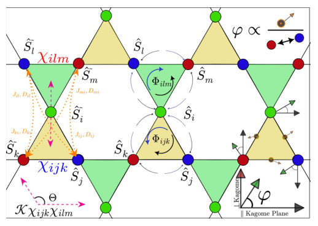
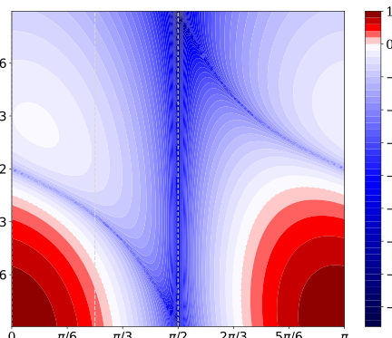
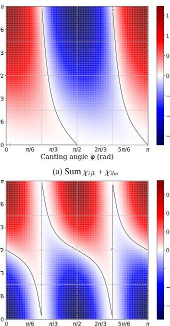
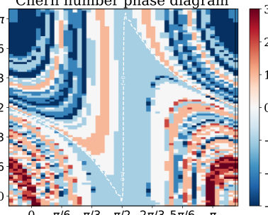
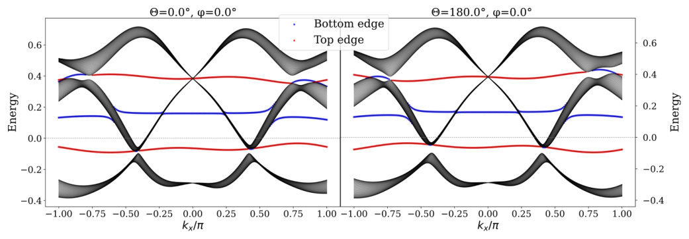
Summary. The paper demonstrates that geometric curvature within a folded Kagome lattice can act as a powerful, tunable control knob for generating topological magnon phases. By analyzing the chiral hopping mediated by higher-order couplings, the authors show this structural effect can dominate over conventional interactions like the DM term, leading to robust, chirality-dependent edge states analogous to CISS effects.
Why it may be interesting. This work connects structural geometry directly to fundamental quantum transport properties (topology) in magnetic materials, offering a pathway for engineering exotic states without relying solely on intrinsic material symmetries or strong spin-orbit coupling.
Main problem. The study aims to establish geometric curvature as a tunable control parameter for realizing topological magnon phases, particularly in magnetic systems where conventional symmetry-enforced interactions like the DM term are weak or forbidden.
Main result. Curvature, encoded by the folding and canting angles of the lattice structure, can generate a dominant chiral hopping amplitude that dictates the system's topology (Chern number), mimicking chirality-induced spin selectivity observed in molecular systems.
Method. The authors derive the single-magnon Hamiltonian using linear spin-wave theory applied to an extended spin model on a Kagome lattice. They analyze the resulting magnon hopping terms derived from higher-order 'bow-tie' chiral couplings.
Model / system. The system is a 2D ferromagnet modeled on a folded Kagome lattice, described by a Hamiltonian including Heisenberg, DM, and a novel bow-tie coupling term. The key physics arises from the geometric dependence of this chirality-mediated hopping amplitude.
Key observables. Chern number ($C=\pm 1$), chiral-mediated magnon hopping amplitude ($F$), edge state spectra (ribbon spectra), and the ratio $|F|/|D_{jm}|$.
Important parameters / regimes. Folding angle ($\Theta$) and spin canting angle ($\phi$); these act as continuous tuning knobs for the topological phase.
Assumptions / limitations. The analysis relies on linear spin-wave theory (LSW) applied around a non-collinear classical ground state, and assumes specific geometric folding conditions to derive the coupling factor $F(\Theta, \phi)$.
Figures summary. Figures illustrate the lattice structure, the dependence of the chiral hopping factor $F$ on $\Theta$ and $\phi$, and phase diagrams showing regions where curvature-driven topology ($C=\pm 1$) dominates over DM-driven regimes.
Paper structure. The paper systematically derives the magnon Hamiltonian from an extended spin model, determines how geometric parameters ($\Theta, \phi$) enter as effective couplings ($F$), analyzes the resulting topological invariants (Chern number), and confirms the bulk-boundary correspondence via edge state spectra.
We show that geometric curvature, encoded in the folding angle between two corner-sharing triangles on a kagome lattice, provides a continuous tuning knob for topological magnon phase. Starting from an extended spin Hamiltonian with exchange, Dzyaloshinskii-Moriya (DM) interaction, and a higher-order bow-tie coupling of scalar chiralities, we derive the chirality-mediated hopping amplitude, which depends on the folding and spin canting of the bow-tie triangles. At small folding and canting angles, the bow-tie coupling surpasses DM, establishing a curvature-dominated regime. These results establish curvature as an intrinsic geometric control parameter for topological magnonics and reveal a direct analogy with chirality-induced spin selectivity in molecular systems, pointing to a unified mechanism for chirality driven transport across scales. The mechanism is particularly relevant for chiral crystals where the DM interaction is weak or forbidden by symmetry, as in systems with a six-fold screw axis.
Authors: Mohammad Mohammadi, Farnaz Eizadbaksh, Vahideh Bagheri
Type: theory · Category: other · PDF: https://arxiv.org/pdf/2607.08752v1
Analysis basis: full PDF text, analyzed in chunks
Topic relevance: non-equilibrium dynamics 3/5 · driven-dissipative phase transition 2/5 · non-equilibrium universality 2/5 · Frenkel-Kontorova 1/5 · Keldysh / 2PI / non-Gaussian methods 1/5 · methods for driven-dissipative 1/5
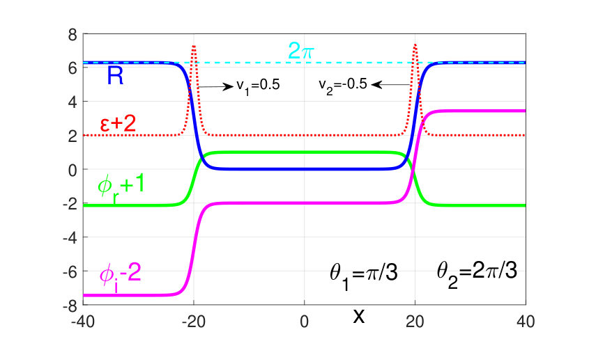
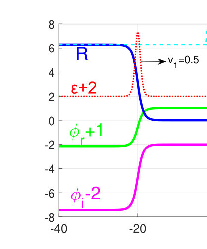
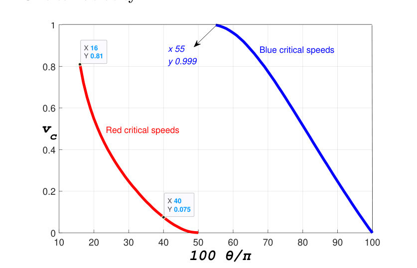
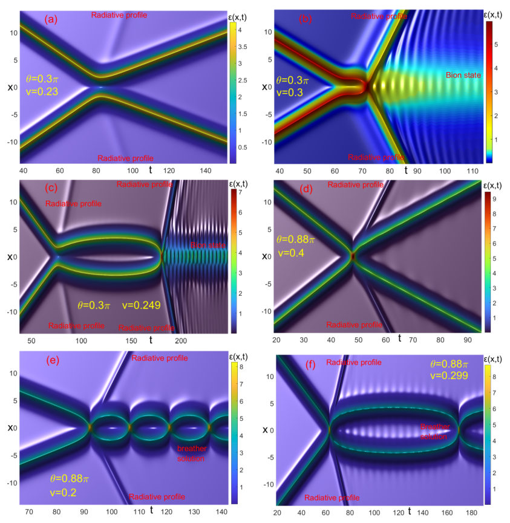
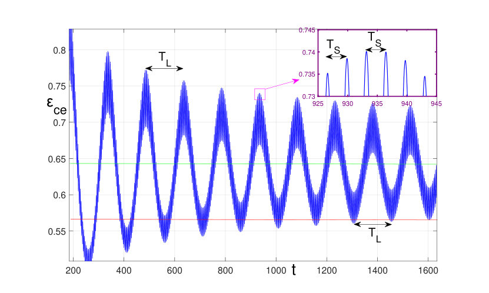
Summary. This work numerically analyzes kink collisions in the Complex Sine-Gordon model, showing that the system's dynamics are highly sensitive to the relative phase between colliding kinks. Unlike simpler models, the CSG exhibits a dual critical velocity structure where increasing initial speed can lead either to capture or scattering depending on the phase. This highlights the crucial role of internal symmetries in determining soliton interaction outcomes.
Why it may be interesting. The concept of an 'effective internal degree of freedom' (the phase) controlling macroscopic dynamics like soliton collision outcomes is relevant to understanding complex order parameters in condensed matter systems or quantum field theories with internal symmetries.
Main problem. The study investigates complex kink-kink collisions within the Complex Sine-Gordon (CSG) model to determine how the final state depends on both initial relative velocity and phase.
Main result. The CSG system exhibits rich dynamics, including scattering, capture, and bion formation, characterized by two distinct phase-dependent branches of critical velocity that contrast sharply with real sine-Gordon models.
Method. Numerical simulations are employed to model the time evolution of the complex scalar field during collisions, analyzing energy density components and radiative emission.
Model / system. The system is governed by the Complex Sine-Gordon (CSG) model, which generalizes the real SG theory using a complex scalar field $\phi$. This introduces an internal phase degree of freedom ($ heta$) that dictates collision outcomes.
Key observables. Collision outcomes (scattering vs. capture), energy carried by radiative profiles, and extreme values of energy density components ($k_{max}, u_{max}, R_{max}$) at the collision center.
Important parameters / regimes. Initial relative phase ($\Delta heta$) and initial velocity ($v$), which define two distinct critical velocity branches (red/blue).
Assumptions / limitations. The use of linear superposition as an approximation for initial kink conditions, and numerical limitations restricting measurements to certain time scales.
Figures summary. Figures illustrate the dependence of collision outcomes on phase and velocity, showing regimes of capture versus scattering, and visualizing energy density profiles and radiative emission over time.
Paper structure. The paper progresses by establishing the CSG model's complexity due to its internal phase, detailing numerical methods for simulating collisions, presenting diagnostics like radiation energy ratios, and finally mapping out the dual critical velocity structure based on initial conditions.
The complex sine-Gordon (CSG) model contains an internal phase degree of freedom that strongly modifies the dynamics of its solitary-wave solutions. We present a numerical study of complex kink--kink collisions and determine how the final state depends jointly on the initial velocity and relative phase. In contrast with the elastic collisions of the real sine-Gordon model, the CSG system exhibits scattering, capture, long-lived bion formation, breather-like states, and emission of radiative profiles. The simulations reveal two distinct phase-dependent branches of critical velocity. In one branch, increasing the initial velocity promotes capture, whereas in the other it restores scattering. This dual structure highlights the rich velocity--phase dependence of the collision dynamics. We also compute the energy carried by radiative profiles and examine extreme values of the energy density, kinetic and gradient contributions, and field modulus at the collision center. These quantities show sharp transitions at critical points and provide sensitive diagnostics of phase-controlled dynamics. These results suggest that the relative phase behaves as an effective internal degree of freedom that plays an important role in the collision dynamics of complex solitons.
Authors: M. Selch
Type: theory · Category: other · PDF: https://arxiv.org/pdf/2607.08648v1
Analysis basis: full PDF text, analyzed in chunks
Topic relevance: Keldysh / 2PI / non-Gaussian methods 3/5 · non-equilibrium dynamics 2/5 · analog quantum simulation 1/5 · correlated / nonlocal dissipation 1/5 · driven-dissipative phase transition 1/5 · methods for driven-dissipative 1/5 · non-equilibrium universality 1/5
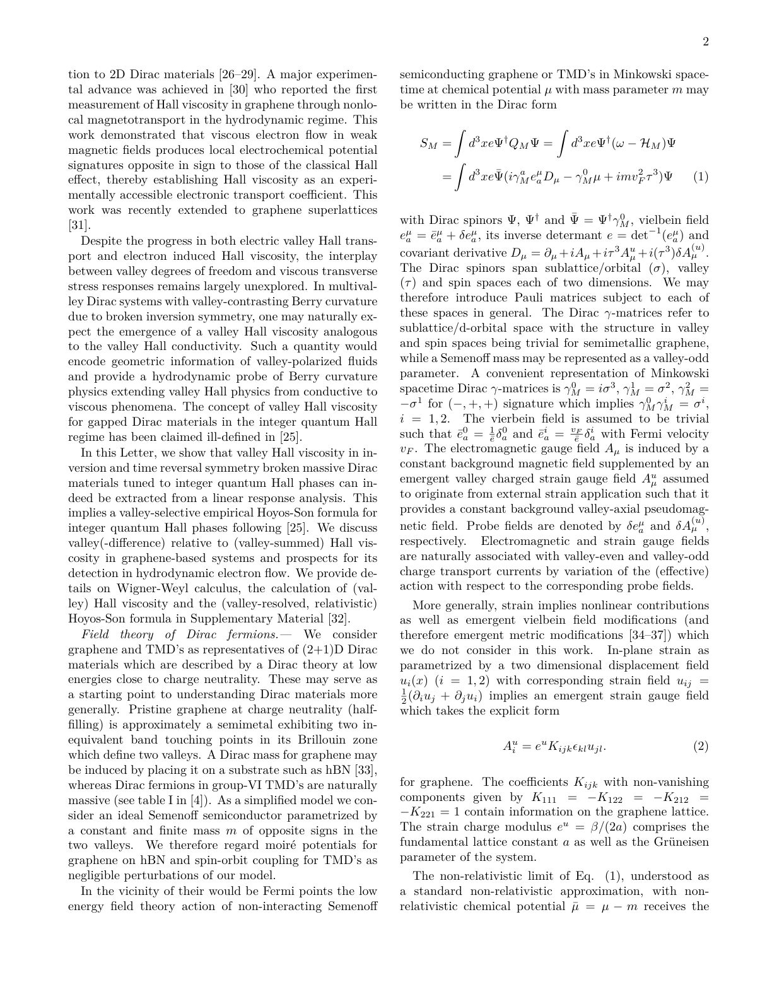
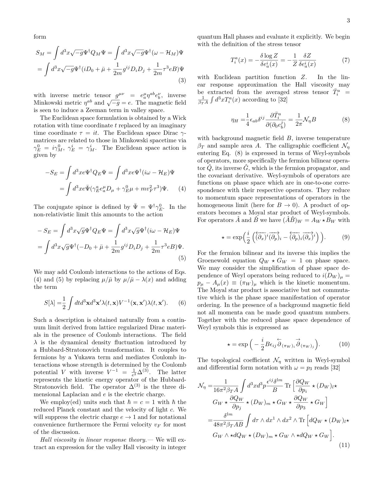
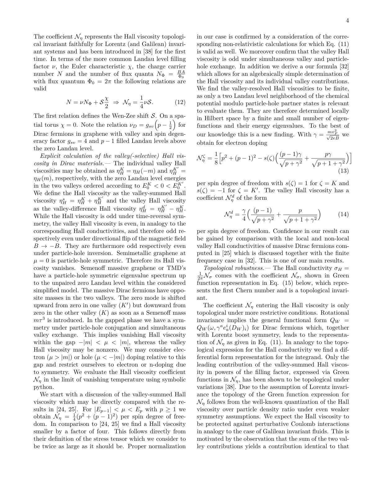
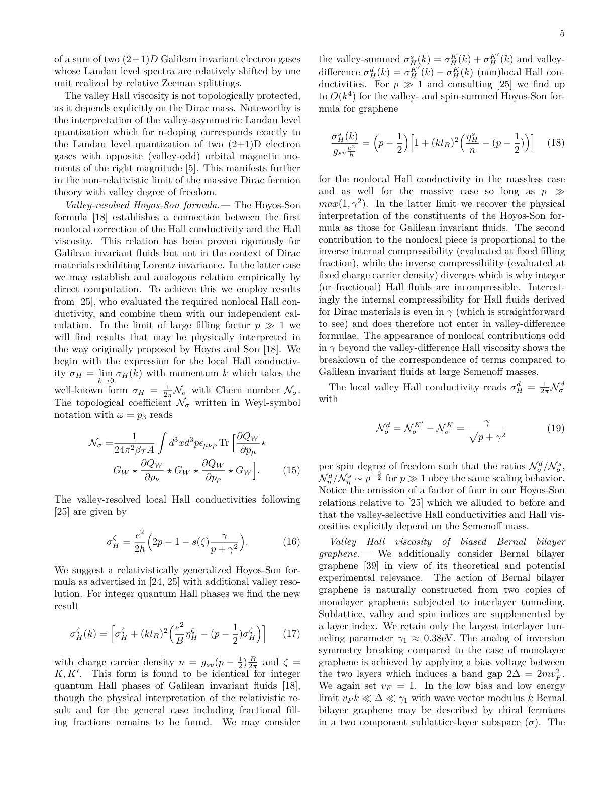
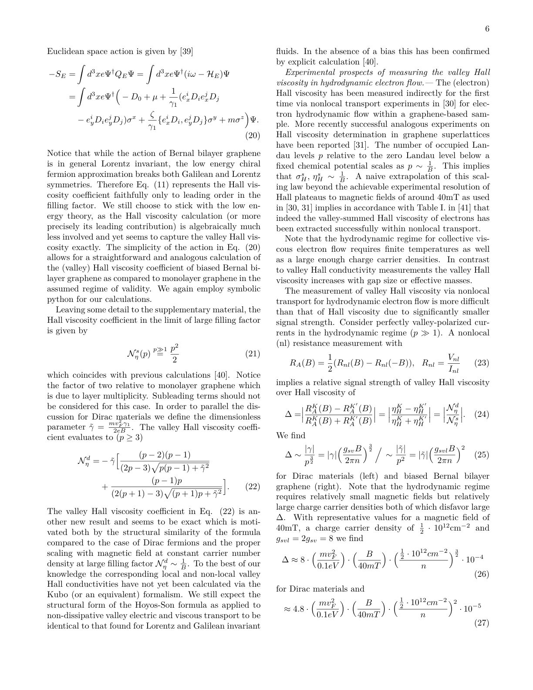
Summary. This theoretical paper calculates the valley-resolved Hall viscosity in quantum Hall phases of 2D Dirac materials. It refines previous calculations by regularizing divergences and extends the Hoyos-Son relation to individual valleys. The work provides crucial insights into how viscous transport coefficients can be related to topological invariants in these advanced electronic systems.
Why it may be interesting. While focused on condensed matter transport, the rigorous derivation of topological relations like the generalized Hoyos-Son formula connects macroscopic response coefficients (viscosity, conductivity) via fundamental symmetries, which has parallels in effective field theories used in AMO physics.
Main problem. The primary goal is calculating the valley-resolved Hall viscosity ($\eta_{xy}^v$) for integer quantum Hall phases in (2+1)D Dirac materials.
Main result. The authors show that previous divergences in single-valley viscous contributions are regularized to finite values, and they extend the Hoyos-Son formula structure to individual valleys.
Method. Calculations utilize an equivalent Green function formulation within Wigner-Weyl calculus and linear response theory applied to stress tensors.
Model / system. The study focuses on (2+1)D Dirac materials, including graphene and TMDs, operating in the integer quantum Hall regime. Specific models include biased Bernal bilayer graphene for detailed analysis.
Key observables. Valley-resolved Hall viscosity ($\eta_{xy}^v$), local/nonlocal Hall conductivity ($\sigma_H(k)$), and the valley-$ ext{difference}$ Hall viscosity coefficient ($\eta_d$).
Important parameters / regimes. Filling factor ($p$), magnetic field ($B$), interlayer tunneling parameter ($\gamma_1$), and chemical potential ($\mu$).
Assumptions / limitations. The analysis often relies on extending formulas derived for Lorentz-invariant systems, even when the specific low-energy model (like bilayer graphene) breaks these symmetries.
Figures summary. Not specified by notes; the structure suggests derivations of explicit formulas for $\eta_s(p)$ and $\eta_d$ based on filling factor $p$.
Paper structure. The paper builds from general formalism (Wigner-Weyl calculus, Hoyos-Son extension) to specific calculations for valley-summed and valley-difference viscosities in various Dirac systems.
We calculate the valley-resolved Hall viscosity for Lorentz-invariant integer quantum Hall phases in Semenoff-semiconducting graphene-like systems at zero temperature. The Kubo formalism based discussion reported in Phys. Rev. B 100, 115421 (2019) revealed the divergence of single valley viscous Hall contributions for this case with only a valley-summed Hall viscosity being finite and therefore well-defined. Our approach to the Hall viscosity calculation is based on an equivalent Green function formulation within Wigner-Weyl calculus. We find that the previously identified divergence seems to be regularized to a finite value in a proper representation of the valley-resolved Hall viscosity in terms of energy eigenfunctions and eigenvalues. Together with the local Hall conductivity and its first nonlocal correction, reported as well in Phys. Rev. B 100, 115421 (2019), we extend the empirical relativistic Hoyos-Son formula to individual valleys. Both the original Hoyos-Son formula for Galilean invariant fluids and its relativistic extension to Dirac materials are found to be structurally identical for integer quantum Hall phases and expressible in terms of local electric and viscous Hall responses. In addition we evaluate the valley(-difference) Hall viscosity for biased Bernal bilayer graphene in the chiral fermion low energy approximation. Prospects of measuring valley Hall viscosity in nonlocal transport for mono- and bilayer graphene- and group-VI TMD-based devices are discussed.
Authors: Yui Sakamoto, Fuyuki Ando, Keigo Ito, Hossein Sepehri-Amin, Takamasa Hirai, Yuto Watanabe, Poonam Rani, Yoshikazu Mizuguchi, Ken-ichi Uchida
Type: experiment · Category: other · PDF: https://arxiv.org/pdf/2607.08005v1
Analysis basis: full PDF text, analyzed in chunks
Topic relevance: spintronics-quantum-optics interface 3/5 · driven-dissipative phase transition 1/5 · exotic spin models in light-matter 1/5
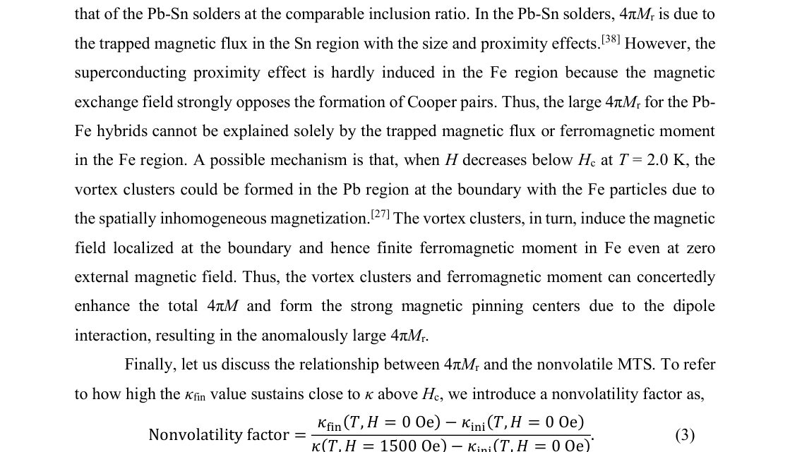
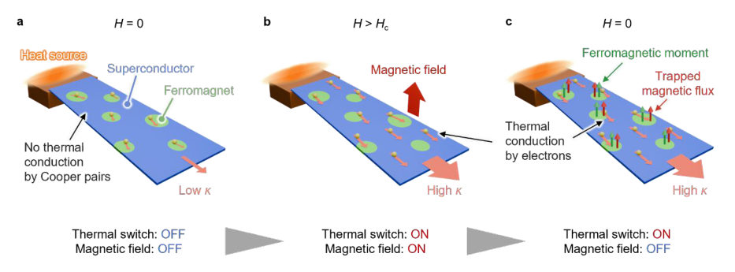
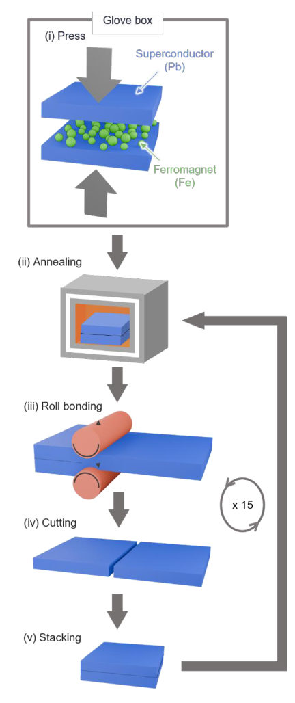
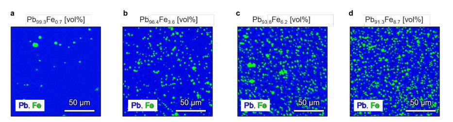
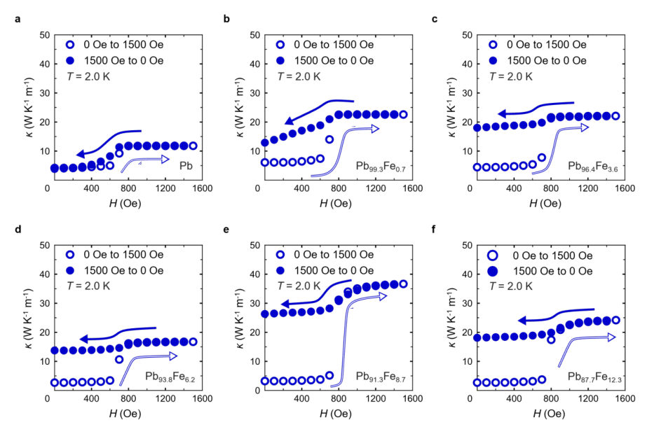
Summary. This work reports on achieving a record-high giant nonvolatile magneto-thermal switching ratio using Pb-Fe superconductor-ferromagnet hybrids. The enhancement is attributed to the ferromagnetic inclusions creating strong magnetic pinning centers that break superconductivity at zero field. This demonstrates a highly promising strategy for next-generation, energy-efficient thermal management materials.
Why it may be interesting. The strong coupling between magnetism (ferromagnetism) and superconductivity in the presence of thermal transport mechanisms provides a platform for studying coupled order parameters, relevant to non-equilibrium quantum phenomena.
Main problem. To develop an energy-efficient thermal control component by achieving a giant nonvolatile magneto-thermal switching ratio (MTSR).
Main result. The authors achieved a record-high nonvolatile MTSR of 719% in ferromagnetic Fe-superconducting Pb hybrids, significantly surpassing previous records.
Method. Thermal conductivity ($\kappa$) was measured as a function of external magnetic field ($H$) before and after cycling the field to quantify the nonvolatility. Sample preparation involved accumulative roll bonding (ARB).
Model / system. The study investigates superconductor-ferromagnet hybrids, specifically Pb-Fe systems, where the ferromagnetic moment of Fe interacts with the superconducting state of Pb.
Key observables. Thermal conductivity ($\kappa$), Nonvolatile MTSR, Remanent Magnetization ($4\pi M_r$).
Important parameters / regimes. Fe inclusion ratio (varied), Temperature (2.0 K), Magnetic Field ($H$).
Assumptions / limitations. The nonvolatility is attributed to the ferromagnetic moment of Fe breaking superconductivity at zero field, leading to trapped magnetic flux effects.
Figures summary. Figures illustrate schematics of MTS, elemental mapping confirming Fe dispersion in Pb, and plots showing $\kappa$ vs $H$, MTSR vs inclusion ratio for both Fe and Sn systems, and magnetization vs temperature/field history.
Paper structure. The paper details the fabrication process (ARB), characterization (SEM-EDX), measurement of thermal conductivity dependence on $H$ to show MTS, quantification of nonvolatility using $\kappa_{ini}$ vs $\kappa_{fin}$, and correlation between MTSR and remanent magnetization.
Magneto-thermal switch is a crucial thermal component which enables heat transfer control by the application of an external magnetic field. Recently, a nonvolatile behavior in magneto-thermal conductivity at zero magnetic field was observed in type-II and phase-separated superconductors owing to magnetic flux pinning nature, leading to an energy-efficient thermal control technology. However, the nonvolatile magneto-thermal switching ratio has been much lower than the volatile one in conventional materials. Here, we demonstrate a giant nonvolatile magneto-thermal switching in ferromagnetic Fe-superconducting Pb hybrids. The dispersion of pure Fe particles realizes increased electron and decreased phonon contributions in the thermal conductivity, which enhances the magneto-thermal switching ratio at the superconducting-to-normal conducting phase transition. Furthermore, in concert with trapped magnetic flux by supercurrent, ferromagnetic moment of Fe breaks the superconductivity of Pb matrix at zero magnetic field, enabling a significantly large nonvolatility even with a slight amount of Fe inclusions. Consequently, the nonvolatile magneto-thermal switching ratio reaches 719% in maximum at the Fe ratio of 8.7 vol%, which is more than twice the previous record value observed in Pb-Sn composites and the volatile one in pure Pb. This work broadens the exploration space and strategy for giant nonvolatile magneto-thermal switching materials.
Authors: Noa Varela-Domínguez, Marcel S. Claro, Araceli Gutiérrez-Llorente, Eric Langenberg, Xinxin Hu, Núria Bagués, Anthony Edgeton, Chang Beom-Eom, Jordi Arbiol, José Santiso, Francisco Rivadulla
Type: experiment · Category: other · PDF: https://arxiv.org/pdf/2607.08683v1
Analysis basis: full PDF text, analyzed in chunks
Topic relevance: driven-dissipative phase transition 2/5 · analog quantum simulation 1/5 · correlated / nonlocal dissipation 1/5 · non-equilibrium dynamics 1/5 · spintronics-quantum-optics interface 1/5
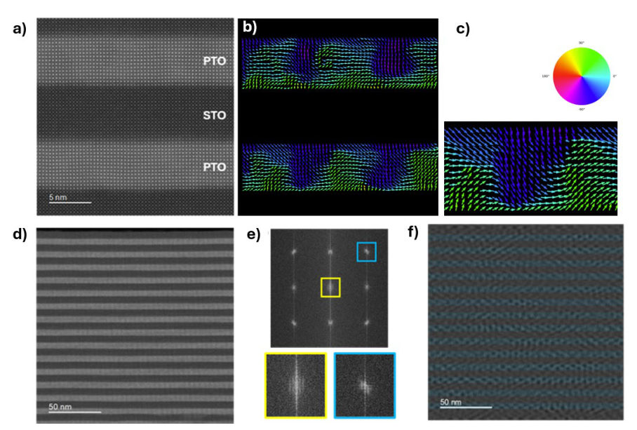
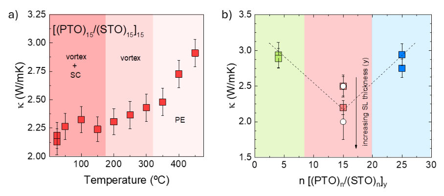
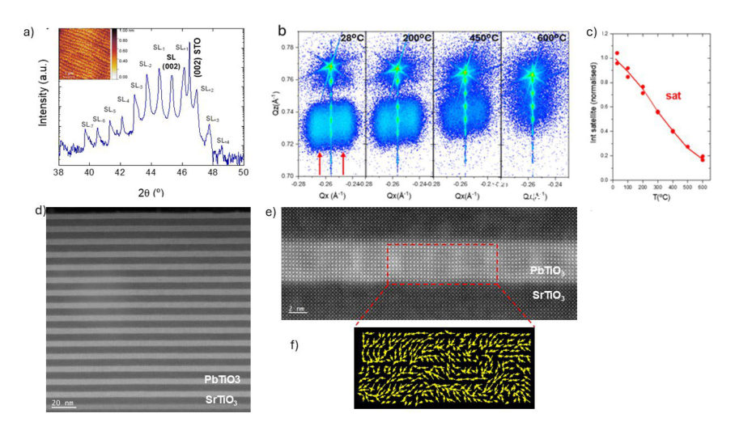
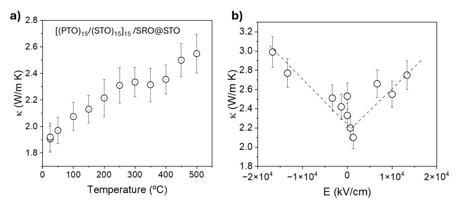
Summary. This work demonstrates that complex polar superstructures formed in ferroelectric/paraelectric superlattices can act as active elements for thermal management. By precisely controlling the arrangement of polarization textures—such as forming a 3D supercrystal—researchers can achieve significant, tunable suppression of the material's thermal conductivity. This opens avenues for designing next-generation heat dissipation technologies.
Why it may be interesting. While focused on thermal transport, the underlying physics involves phase transitions driven by competing electrostatic and elastic interactions in artificial quantum materials, which touches upon concepts relevant to correlated states and emergent order parameters.
Main problem. The study investigates how complex polar superstructures within ferroelectric/paraelectric superlattices can be engineered to actively control and modulate the material's thermal conductivity.
Main result. The formation of a 3D arranged polar superstructure (SC) significantly suppresses the thermal conductivity ($\kappa$), with this effect being highly dependent on the precise periodicity and thickness of the superlattice.
Method. Measurements combine structural characterization using X-ray diffraction (XRD) and STEM-HAADF imaging to map polarization textures, alongside Frequency Domain Thermoreflectance (FDTR) for quantifying thermal conductivity ($\kappa$).
Model / system. The physical system is epitaxial thin films of ferroelectric PbTiO3/paraelectric SrTiO3 forming periodic superlattices. The control mechanism relies on tuning the polar phase diagram via strain, depolarization, and interfacial energies to stabilize specific polar textures like vortices or supercrystals.
Key observables. Thermal conductivity ($\kappa(T)$), polarization texture (vortex arrays, skyrmions, SC phases), structural periodicity ($\Lambda_{ ext{SL}}$, $\Lambda_{ ext{vortex}}$, $\Lambda_{ ext{SC}}$).
Important parameters / regimes. Superlattice thickness ($y$), temperature ($T$), applied electric field strength, and the ratio of PTO/STO layers.
Assumptions / limitations. The analysis assumes that phonon transport is strongly coupled to the long-range ordering and specific arrangement of polar dipoles within the superlattice structure.
Figures summary. Figures show STEM images revealing wavy polarization patterns; XRD maps confirm multiple satellite peaks corresponding to distinct periodicities (vortex vs. SC); $\kappa(T)$ plots demonstrate sharp changes in thermal transport linked to phase transitions.
Paper structure. The paper systematically characterizes the structural phases (using TEM/XRD) that emerge due to strain and periodicity, correlates these structural findings with temperature-dependent measurements of polarization textures, and finally quantifies the resulting anomalous control over thermal conductivity ($\kappa$).
Integrating epitaxial thin films of ferroelectric PbTiO3 and paraelectric SrTiO3 into artificially layered periodic superlattices provides a unique platform for tuning strain, depolarization, and interfacial/surface energies, thereby accessing a rich phase diagram of topological polar structures (skyrmions, vortices, merons, or sinusoidal waves) and superstructures (polar supercrystals). Here we show that the 3D arrangement of polar vortices in a supercrystal suppresses thermal conductivity (k) of PTO/STO superlattices (SLs). The temperature dependence of k reflects the evolution of the polar superstructure, as determined by X-ray diffraction and transmission electron microscopy. The comparison with other SLs suggests that the 3D arrangement is crucial for controlling thermal conductivity beyond the usual interfacial scattering. Moreover, we observed an unexpected reduction in thermal conductivity with increasing superlattice thickness, a phenomenon reminiscent of phonon-wave Anderson localization. Our results show that complex polar superstructures can be useful active elements for modulating heat transport in technologies where control over heat dissipation is critical.
Authors: I. L. Drichko, I. Yu. Smirnov, M. O. Safonchik, M. A. Shakhov, A. K. Bakarov, A. A. Bykov
Type: experiment · Category: other · PDF: https://arxiv.org/pdf/2607.08682v1
Analysis basis: full PDF text, analyzed in chunks
Topic relevance: non-equilibrium dynamics 1/5
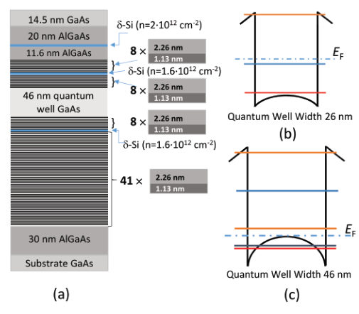
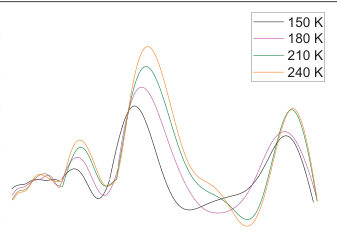
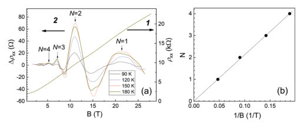
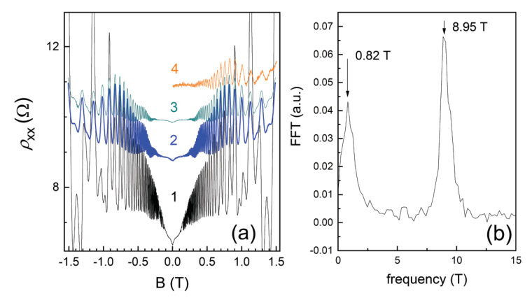
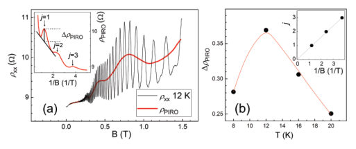
Summary. This experimental study investigates magnetophonon resistance oscillations (MPR) and phonon-induced resistance oscillations (PIRO) in GaAs quantum well structures. By measuring magnetoresistance at varying temperatures, the authors confirm resonant scattering mechanisms involving both optical and acoustic phonons. The work provides detailed insights into electron-phonon coupling physics within semiconductor nanostructures.
Why it may be interesting. While focused on solid-state transport, the detailed analysis of electron-phonon coupling strengths and resonant scattering conditions provides fundamental insights into energy relaxation mechanisms in confined quantum systems, which are relevant for understanding decoherence rates in quantum devices.
Main problem. The study investigates Magnetophonon Resistance Oscillations (MPR) due to optical phonon scattering at higher temperatures and Phonon-Induced Resistance Oscillations (PIRO) from acoustic phonons at lower temperatures.
Main result. MPR confirms resonant electron scattering by bulk longitudinal optical phonons, while PIRO demonstrates resonant scattering by bulk acoustic phonons, with the amplitude dependence revealing details about various scattering mechanisms.
Method. Measurements involve tracking magnetoresistance ($ ho_{xx}$) as a function of magnetic field ($B$) and temperature ($T$), utilizing Fourier analysis to isolate low-frequency oscillations.
Model / system. The physical system is semiconductor structures comprising a GaAs quantum well embedded within AlAs/GaAs superlattice barriers doped with Si. The study analyzes electron transport in the presence of quantized energy subbands.
Key observables. Magnetoresistance ($ ho_{xx}$), oscillation periodicity in $B$ (for both optical and acoustic phonons), and temperature dependence of oscillation amplitudes.
Important parameters / regimes. Magnetic field ($B$) up to 30 T, Temperature ($T$) ranging from 10 K to 240 K, and the characteristic phonon frequencies ($\omega_{ ext{LO}}$).
Assumptions / limitations. The analysis assumes that low-temperature oscillations are dominated by intrasubband scattering on longitudinal acoustic phonons, and that the observed phenomena can be modeled using standard electron-phonon interaction theories.
Figures summary. Figures show temperature dependence of LO phonon frequencies, energy schemes for two subbands in GaAs QWs, and plots of $ ho_{xx}(B)$ at various temperatures illustrating resonance peaks (MPR) and Fourier analysis results confirming PIRO oscillations.
Paper structure. The paper systematically investigates MPR first, establishing the role of bulk optical phonons independent of dimensionality. It then transitions to analyzing PIRO at low temperatures, using Fourier techniques to extract acoustic phonon signatures from the background magnetoresistance.
Magnetophonon resistance oscillations (MPR) associated with the resonant scattering of electrons by optical phonons at temperatures of 77-240 K, as well as resonant scattering of electrons by acoustic phonons (PIRO) at temperatures of 10-25 K, were investigated in the same samples featuring a GaAs quantum well and AlAs/GaAs superlattice barriers doped with Si. The study of MPR demonstrated that resonant electron scattering occurs on bulk longitudinal optical phonons and does not depend on the dimensionality of the system or inter-subband transitions in systems with two subbands of size quantization. However, the amplitude of the oscillation with number $N=1$ in two-dimensional structures depends on the interplay of scattering mechanisms, which, in turn, is influenced by the structure of the system. As for PIRO, in samples with two size quantization subbands, resonant electron scattering by longitudinal acoustic phonons is observed against the background of inter-subband transitions (MISO), leading to their interference.
Authors: Özlem Öztürk
Type: theory · Category: statistical mechanics · PDF: https://arxiv.org/pdf/2607.08527v1
Analysis basis: full PDF text, analyzed in chunks
Topic relevance: Frenkel-Kontorova 1/5




Summary. This work uses Molecular Dynamics simulations to examine how nanofluids containing nonrigid nanoparticles behave structurally when suspended in a polymer melt. By analyzing radial distribution functions and mean forces, the authors determine that nanoparticle size dictates stability; specifically, smaller particles are prone to structural collapse at elevated temperatures.
Why it may be interesting. While focused on classical soft matter, the study's rigorous application of statistical mechanics principles to determine structural phase transitions (shape instability) under thermal stress is relevant to understanding complex many-body dynamics in confined or interacting systems.
Main problem. The study investigates the shape stabilities of polymeric nanofluids by analyzing their radial distribution functions (RDF/ARDF). The goal is to understand how nanoparticle structure changes under varying thermal conditions.
Main result. Nanoparticles with 28 atoms lose their concentric shell structure at higher temperatures, while those with 42 and 56 atoms maintain stability despite increasing temperature and decreasing particle-liquid affinity.
Method. Molecular Dynamics (MD) simulations were employed using a coarse-grained particle-based approach under the NVE ensemble. The analysis focused on calculating angle-dependent radial distribution functions.
Model / system. The system consists of nonrigid (soft) nanoparticles suspended in a polymer melt base fluid. Interactions are modeled using combinations of FENE and Lennard-Jones potentials for monomers, chains, and nanoparticle interactions.
Key observables. One dimensional and three dimensional angle dependent radial distribution functions (RDF and ARDF); Mean force magnitude as a function of relative distance.
Important parameters / regimes. Nanoparticle sizes (28, 42, and 56 atoms); Temperature range ($T=1.2$ to $T=1.8$); Interaction coefficients ($C_{mn}$).
Assumptions / limitations. The simulation uses a coarse-grained particle-based model; the analysis assumes that changes in distribution shape reflect structural stability.
Figures summary. Figures illustrate mean force calculations for 28, 42, and 56 atom nanoparticles at various interaction strengths and temperatures, showing bimodal or unimodal distributions related to shell thickness.
Paper structure. The paper details the MD simulation setup (Hamiltonian components, integration algorithms) followed by specific analyses on RDFs for stability assessment, and later analyzes mean force magnitudes as a function of relative distance across different particle sizes.
Nanofluids, which are composed of insoluble, stable, and well-dispersed solid particles of nanoscale and/or subnanometer sizes suspended in a base liquid, are the next generation of liquids of today. The purpose of this paper is to investigate the one dimensional and three dimensional angle dependent radial distribution functions RDF and ARDF of polymeric nanofluids made up of nonrigid (soft) nanoparticles and a polymer melt (base fluid) using the molecular dynamics simulation approach and to search the shape stabilities by using these results. For this purpose, we use the nanoparticles of three different sizes: 28, 42, and 56 particles. We research them both within the base fluid and without this polymeric medium for instability analysis. We found that the nanoparticles with 28 atoms show the shape instability inside the base fluid when we increase the system temperature from T=1.2 to T=1.8 and hence, the structure of two concentric spherical shell of the nanoparticle breaks down and as a result the empty vacuum between these inner and the outer shells disappears. In contrast to this findings, the nanoparticles with 42 and 56 atoms show the shape stability inside the base fluid by preserving their concentric shell structures when we rise the system temperature and decrease the affinity between the nanoparticles and the base liquid medium.